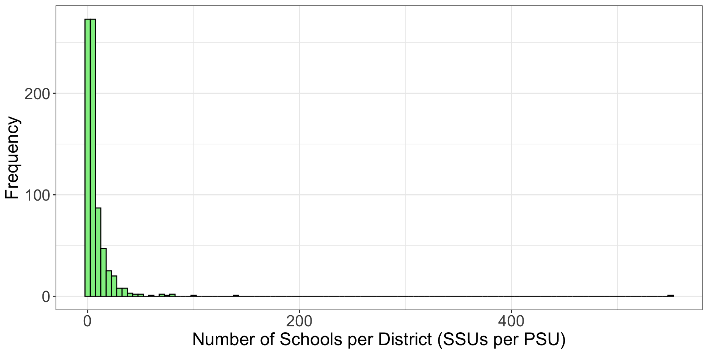
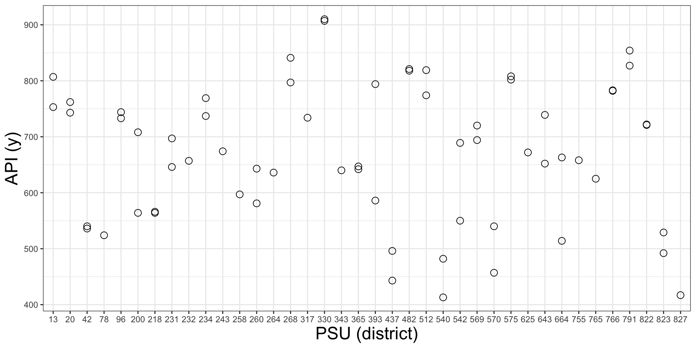

Two-stage Cluster Sampling
PUBHBIO 7225 Lecture 13
Topics
Two-stage Cluster Sampling
Unbiased Estimators
Ratio Estimators
Sampling Weights
Variance Estimation
Activities
Readings
Assignments
In one-stage cluster sampling, we sample all SSUs within the sampled PSUs
In two-stage cluster sampling, we only sample some SSUs within the sampled PSUs
Why might we do this?
SSUs within a cluster may be so similar that measuring all is a waste of resources
Might be expensive to sample SSUs, so only a subsample is taken for cost reasons
Might not be practical to sample all SSUs (ex: all people in a household)
Select an SRS of \(n\) PSUs from population of \(N\) PSUs
Select an SRS of \(m_i\) SSUs from the \(M_i\) SSUs in PSU \(i\)
The extra stage of sampling complicates the notation and estimators
Note that quite often in large-scale surveys something other than SRS is used at the first stage – often it is probability proportional to size (PPS) sampling
We will return to this concept next lecture (but it is exactly what it sounds like!)
More Variability: Now there is sample-to-sample variability from both stages of data collection
A different two-stage sample could contain the same or different PSUs
Even if (some/all) same PSUs are selected, a different set of SSUs could be sampled from those PSUs
As a result, we should expect two contributions to (“pieces of”) the variance of estimators:
More Design Choices: Have to decide how many SSUs per PSU to sample
We do not have to sample the same number of SSUs from each PSU
If an PSU with only 1 SSU is sampled, the only choice is to sample 1 SSU (“all”)
Unlike stratified sampling, where you need at least 2 units per stratum (to estimate variance), you can sample just 1 SSU in a sampled PSU (and often we do!)
Population: \(M_0=\) 6194 schools in \(N=\) 757 school districts
PSU = school district
SSU = school
\(y\) = school’s Academic Performance Index
(based on standardized test results)
True population mean API: \(\bar{y}_U =\) 664.7
Highly skewed number of SSUs per PSU

Two-stage cluster sample taken:
Stage 1: \(n =\) 38 PSUs (districts) out of \(N=\) 757 – roughly 5% of total
Stage 2: \(m_i=\) 2 SSUs (schools) per PSU

Number of SSUs per PSU is either 1 or 2 (by design)
We want to use this 2-stage cluster sample to estimate the overall mean API
Two-Stage Cluster Sampling (Part 1)
One-Stage Cluster Sample: (SRS of \(n\) PSUs out of \(N\) total; take all \(M_i\) SSUs in the selected PSUs):
To estimate the mean of \(y\) we…
observe the true \(t_i\) (total of \(y\) for cluster \(i\)) in each sampled PSU,
calculate the average cluster total across the sampled PSUs \((\bar{t})\),
multiply this average by the number of PSUs (\(N\)) to get a grand total \((\hat{t}_{clus})\)
and divide by the total number of SSUs \((M_0)\) to get the unbiased estimator \((\hat{\bar{y}}_{clus})\)
OR, divide by the estimated total number of SSUs \((\widehat{M}_0)\) to get the ratio estimate \((\hat{\bar{y}}_r)\)
In a Two-Stage Cluster Sample, we don’t observe the true \(\mathbf t_i\) for each sampled PSU
However, we can estimate the PSU-specific totals because we took an SRS from each PSU!
Essentially this is the only change to the estimation process – add in a step to estimate the PSU totals \((\hat{t}_i)\) and then use them like we used the true totals in one-stage cluster sampling
In other words, replace \(t_i\) with \(\hat{t}_i\) above (and \(\bar{t}\) with \(\bar{\hat{t}}\) )
Of course, variance estimation is much messier…
Start with cluster-specific estimates:
| Quantity | Estimate | In Words |
|---|---|---|
| PSU Mean (of \(y\)) | \(\displaystyle \bar{y}_i= \frac{1}{m_i} \sum_{j\in \mathcal{S}_i} y_{ij}\) | average of \(y\) for sampled SSUs in PSU \(i\) |
| PSU Total (of \(y\)) | \(\displaystyle \hat{t}_i = M_i \bar{y}_i\) | average of \(y\) for sampled SSUs times the total number of SSUs in PSU \(i\) |
| Variance of \(y\) for SSUs within PSU | \(\displaystyle s_i^2 = \frac{1}{m_i-1} \sum_{j \in \mathcal{S}_i} \left(y_{ij}- \bar{y}_i\right)^2\) | variance of \(y\) for sampled SSUs in PSU \(i\) |
These look messy – but are just the SRS formulae applied within each PSU!
Note that the total, \(\hat{t}_i\), has a “hat” on it (its an estimate) – different from 1-stage sampling
If we have taken an SRS within PSU, then by properties of SRS, estimates are unbiased:
\(E[\bar{y}_i] = \bar{y}_{Ui}\)
\(E[\hat{t}_i] = t_i\)
\(E[s_i^2] = S_i^2\)
Then combine cluster-specific estimates to get overall estimates:
| Quantity | Estimate | In Words |
|---|---|---|
| Mean PSU Total (of \(y\)) | \(\displaystyle \bar{\hat{t}} = \frac{1}{n} \sum_{i \in \mathcal{S}} \hat{t}_i\) | average of estimated PSU totals from sampled PSUs |
| Overall Total (of \(y\)) | \(\displaystyle \hat{t}_{clus}= N\bar{\hat{t}}\) | estimated average PSU total times the number of PSUs (in pop.) |
| Overall Mean (of \(y\)) | \(\displaystyle \hat{\bar{y}}_{clus}= \frac{\hat{t}_{clus}}{M_0}\) (unbiased estimator) | estimated total divided by known total number of SSUs |
| \(\displaystyle \hat{\bar{y}}_r= \frac{\hat{t}_{clus}}{\widehat{M}_0}\) (ratio estimator) | estimated total divided by estimated total number of SSUs | |
| Variance of PSU Totals | \(\displaystyle s^2_t = \frac{1}{n-1} \sum_{i \in \mathcal{S}} \left(\hat{t}_i - \bar{\hat{t}} \right)^2\) | variance of \(\hat{t}_i\) for sampled PSUs |
So to estimate the mean of \(y\) we…
calculate the mean of \(y\) for each sampled PSU \((\bar{y}_i)\),
multiply this average by the number of SSUs per PSU (\(M_i\)) to get the estimated totals in each PSU \((\hat{t}_i)\)
calculate the average of the estimated cluster totals \(\hat{t}_i\) across the sampled PSUs \((\bar{\hat{t}})\),
multiply this average by the number of PSUs (\(N\)) to get a grand total \((\hat{t}_{clus})\)
and divide by the total number of SSUs \((M_0)\) to get the unbiased estimate \((\hat{\bar{y}}_{clus})\)
OR, divide by the estimated total number of SSUs \((\widehat{M}_0)\) to get the ratio estimate \((\hat{\bar{y}}_r)\)
\(\hat{t}_{clus}\) is an unbiased estimator of the true population total \(t_U\) (derivation next slide)
Thus the unbiased estimator of the mean is an unbiased estimator of the true population mean, \(\bar{y}_U\)
But the ratio estimate of the mean is biased, just like with one-stage cluster sampling
\(E[\hat{\bar{y}}_r] = E[\hat{t}_{clus}/\widehat{M}_0] \ne \bar{y}_U\)
However, as in that scenario, the drastic decrease in variance for \(\hat{\bar{y}}_r\) outweighs its small bias, making it the preferred estimator
For multi-stage sampling we prove theoretical results by conditioning on a realized sample and then taking the expectation – using the property of successive conditioning: \(E(A) = E[E(A|B)]\)
Inclusion indicator \(Z_i\) (for the \(i\)th PSU) is a random variable
For equal probability sampling of PSUs: \(P(Z_i=1) = \pi_i = n/N = E(Z_i) = E(Z_i^2)\)
\[\begin{aligned} E(\hat{t}_{clus}) = E(N\bar{\hat{t}}~) = E \left(N \sum_{i \in \mathcal{S}} \frac{1}{n} \hat{t}_i \right) &= E \left(\sum_{i = 1}^N Z_i \frac{N}{n} \hat{t}_i \right) = E \left[ E \left(\sum_{i = 1}^N Z_i \frac{N}{n}\hat{t}_i \bigg| Z_1, \dots, Z_N \right) \right] \\ &= E \left[ \sum_{i = 1}^N Z_i \frac{N}{n} E\left(\hat{t}_i \bigg| Z_1, \dots, Z_N \right) \right] \\ &= E \left[ \sum_{i = 1}^N Z_i \frac{N}{n} E\left(\hat{t}_i \right) \right] \quad \text{because } \hat{t}_i \perp (Z_1,\dots,Z_N)^*\\ &= E \left( \sum_{i = 1}^N Z_i \frac{N}{n} t_i \right) \quad \text{because } E(\hat{t}_i) = t_i \\ &= \sum_{i = 1}^N E(Z_i) \frac{N}{n} t_i \\ &= \sum_{i = 1}^N \frac{n}{N} \frac{N}{n} t_i = \sum_{i = 1}^N t_i = t_U \quad \text{unbiased!} \end{aligned}\]
\[E(\hat{\bar{y}}_{clus}) = E ( \hat{t}_{clus}/ M_0) = E ( \hat{t}_{clus})/M_0 = t_U/M_0 = \bar{y}_U \quad \text{unbiased!}\]
*Expected value of the estimated total in PSU \(i\) (based on the second stage sampling) is independent of whether or not the PSU is selected into the sample
Step 1: Cluster-Specific Estimates: For each of the \(n=\) 38 sampled PSUs (districts):
| PSU | \(M_i\) | \(m_i\) | SSU values of \(y\) | \(\bar{y}_i\) | \(\hat{t}_i = M_i \bar{y}_i\) |
|---|---|---|---|---|---|
| 1 | 10 | 2 | 753, 807 | 780 | 10 \(\times\) 780 = 7800 |
| 2 | 10 | 2 | 762, 743 | 752.5 | 10 \(\times\) 752.5 = 7525 |
| 3 | 19 | 2 | 536, 540 | 538 | 19 \(\times\) 538 = 10222 |
| 4 | 1 | 1 | 524 | 524 | 1 \(\times\) 524 = 524 |
| \(\vdots\) | \(\vdots\) | \(\vdots\) | \(\vdots\) | \(\vdots\) | \(\vdots\) |
Step 2: Combine to get Overall Estimates:
Mean PSU Total = \(\bar{\hat{t}} = \frac{7800 + 7525 + 10222 + \dots}{38} = 4252.013\)
Overall Estimated Total = \(\hat{t}_{clus}= N\bar{\hat{t}} = 757 \times 4252.013 = {3218774}\)
Overall Mean, Unbiased Estimator = \(\frac{\hat{t}_{clus}}{M_0} = \frac{{3218773.8}}{6194} = {519.7}\)
Sample weight for sampled SSU \(j\) in PSU \(i\): \(\displaystyle w_{ij} = \frac{1}{\pi_{ij}} = \frac{N}{n} \frac{M_i}{m_i}\)
Intuition:
Each sampled PSU “represents” \(\frac{N}{n}\) PSUs
And within a PSU each sampled SSU “represents” \(\frac{M_i}{m_i}\) SSUs
So in total a sampled SSU “represents” \(\frac{N}{n} \times \frac{M_i}{m_i}\) SSUs
Weight is the inverse of the probability of selection:
\[\begin{align} \pi_{ij} &= P(\text{SSU $j$ of PSU $i$ in sample}) = P(\text{SSU $j$ selected}|\text{PSU $i$ selected}) \times P(\text{PSU $i$ selected})\\ &= \frac{m_i}{M_i} \times \frac{n}{N} = \frac{n}{N}\frac{m_i}{M_i} \end{align}\]
To get the ratio estimator, we need the estimated population size:
Overall Mean, Ratio Estimator = \(\displaystyle \frac{\hat{t}_{clus}}{\widehat{M}_0} = \frac{3218773.8}{4900.6} = 656.8\)
We can also write estimates in terms of weights (that’s how software is calculating these!)
\(\displaystyle \hat{t}_{clus}= \sum_{i \in \mathcal{S}} \sum_{j \in \mathcal{S}_i} w_{ij} y_{ij}\) = weight \(\times\) y, added up for all sampled SSUs
\(\displaystyle \hat{\bar{y}}_r= \frac{\sum_{i \in \mathcal{S}} \sum_{j \in \mathcal{S}_i} w_{ij} y_{ij}}{\sum_{i \in \mathcal{S}} \sum_{j \in \mathcal{S}_i} w_{ij}} = \frac{\text{ weight $\times$ y, added up for all sampled SSUs}}{\text{sum of weights for all sampled SSUs}}\)
Min. 1st Qu. Median Mean 3rd Qu. Max.
19.92 19.92 39.84 75.39 99.61 358.58
A: When \(\frac{m_i}{M_i}\) is the same for all PSUs (for all \(i\))!
Two-Stage Cluster Sampling (Part 2)
We will spend a bit of time calculating the variance of the estimated total (and how to estimate it)
But – our main interest is often not in the totals!
So why do we focus on the total?
Nearly every quantity we want to estimate can be written as a function of totals
If we can write the quantity in terms of totals, we can use linearization to estimate its variance – like we did with the ratio estimate of the mean in 1-stage cluster sampling
Linearization can be used for a wide range of estimates:
Means (ratio estimator)
Domain (subgroup) estimates
Linear regression coefficients
Logistic regression coefficients
etc.
As it turns out, \(V(\hat{t}_{clus})\) under two-stage cluster sampling is equal to:
the variance under one-stage cluster sampling, plus
an extra term to account for the fact that we are estimating the \(\hat{t}_i\)
(as opposed to directly observing the true \(t_i\) in one-stage cluster sampling)
True (theoretical) variance of the estimated total1: \[V(\hat{t}_{clus}) = \underbrace{N^2 \left(1-\frac{n}{N}\right)\frac{S^2_t}{n}}_{V_{stage1}} + \underbrace{\frac{N}{n} \sum_{i=1}^N M_i^2 \left(1-\frac{m_i}{M_i}\right) \frac{S_i^2}{m_i}}_{V_{stage2}}\]
\(S^2_t\) = true (population) variance of the PSU totals, \(t_i\)
\(S_i^2\) = true variance of the \(y_{ij}\) within PSU \(i\)
Note that both these pieces look like SRS formulae – we take an SRS at each stage.
\[\widehat{V}(\hat{t}_{clus}) = \underbrace{N^2 \left(1-\frac{n}{N}\right)\frac{s^2_t}{n}}_{\widehat{V}_{stage1}} + \underbrace{\frac{N}{n} \sum_{i \in \mathcal{S}} \left(1-\frac{m_i}{M_i}\right)M_i^2 \frac{s_i^2}{m_i}}_{\widehat{V}_{stage2}}\]
\(\widehat{V}_{stage1}\) = variability from sampling at the first stage (PSUs)
\(\widehat{V}_{stage2}\) = added variability from sampling at the second stage (SSUs within PSUs)
In many (most) situations, when \(N\) is large (and FPC small), \(\widehat{V}_{stage1} >> \widehat{V}_{stage2}\)
Variance of the \(\hat{t}_i\) can be very large – affected by differences in cluster sizes \((M_i)\) and by differences in cluster means \((\bar{y}_i)\)
Even if clusters have similar means, different sizes will lead to stage one piece of variance dominating second stage piece
If \(N\) is large then \(\widehat{V}_{stage1}\) is approximately unbiased for the true variance, \(V(\hat{t}_{clus})\) 1
Many software packages simplify calculations by only using \(\widehat{V}_{stage1}\)
Might not be able to calculate \(\widehat{V}_{stage2}\) because:
You don’t have the PSU sizes \((M_i)\) for sampled PSUs
You might have sampled only 1 SSU per PSU, so cannot calculate \(s_i^2\) (within-PSU variance of the SSUs)
If the software is ignoring the second stage variance \((V_{stage2})\) then you only have to tell it about the PSUs (i.e., don’t need to tell it the \(M_i\) or an identifier for the SSUs)
This is sometimes referred to as an ultimate PSU analysis
Estimator of the Total
des <- svydesign(id = ~dnum + snum, weight = ~wt, fpc = ~N + Mi, data=samp)
svytotal(~api00, design = des) total SE
api00 3218774 612674des_ign <- svydesign(id = ~dnum, weight = ~wt, fpc = ~N, data=samp)
svytotal(~api00, design = des_ign) total SE
api00 3218774 612593Point estimates identical
Standard error estimates very similar
For the unbiased estimator, since \(M_0\) is a constant, we have \(V(\hat{\bar{y}}_{clus}) = \frac{1}{M_0^2} V(\hat{t}_{clus})\)
But we know from 1-stage cluster sampling that we can do better (smaller variance)
We usually use the ratio estimator of the mean for 2-stage cluster sampling: \(\displaystyle \hat{\bar{y}}_r= \frac{\hat{t}_{clus}}{\widehat{M}_0}\)
Same as one-stage cluster sampling with unequal cluster sizes
Linearization is again used to calculate the theoretical variance, \(V(\hat{\bar{y}}_r)\)
We can use the same general result from last time (1-stage cluster sampling): \[V(\hat{\bar{y}}_r) \approx \frac{1}{M_0^2}\left[V(\hat{t}_{clus}) + \frac{t_U^2}{M_0^2} V(\widehat{M}_0) - 2\frac{t_U}{M_0} \text{Cov}(\hat{t}_{clus},\widehat{M}_0) \right]\]
We just now have a different expression for \(V(\hat{t}_{clus})\) because of the 2-stage sampling
As we just discussed, often \(V(\hat{t}_{clus})\) is approximated by only the stage 1 variance
Variance Estimator: \[\widehat{V}(\hat{\bar{y}}_r) = \underbrace{\frac{1}{n \hat{\bar{M}}^2} \left(1-\frac{n}{N}\right)\frac{\sum_{i \in \mathcal{S}} (\hat{t}_i - M_i\hat{\bar{y}}_r)^2}{n-1}}_{\widehat{V}_{stage1}} + \underbrace{\frac{1}{nN\hat{\bar{M}}^2} \sum_{i \in \mathcal{S}}M_i^2 \left(1-\frac{m_i}{M_i}\right) \frac{s_i^2}{m_i} }_{\widehat{V}_{stage2}}\]
The first piece, \(\widehat{V}_{stage1}\), is almost the same as 1-stage cluster sampling
Only difference is the estimated PSU total \(\hat{t}_i\) in place of true PSU total \(t_i\)
Uses the variability of the estimated PSU totals \((\hat{t}_i)\) around a PSU-specific estimated total \((M_i\hat{\bar{y}}_r)\), instead of the (estimated) overall average \((\bar{\hat{t}})\) – thus has lower variance than unbiased estimator
As with the variance of \(\hat{t}_{clus}\), the second term \(\widehat{V}_{stage2}\) is usually very small compared to the first term
Ratio Estimator of the Mean
des <- svydesign(id = ~dnum + snum, weight = ~wt, fpc = ~N + Mi, data=samp)
svymean(~api00, design = des) mean SE
api00 656.82 32.651des_ign <- svydesign(id = ~dnum, weight = ~wt, fpc = ~N, data=samp)
svymean(~api00, design = des_ign) mean SE
api00 656.82 32.587Point estimates identical
Standard error estimates very similar
Unbiased Estimator of the Mean
With Second Stage Variance:
\(\widehat{V}(\hat{\bar{y}}_{clus}) = \frac{1}{M_0} \widehat{V}(\hat{t}_{clus}) = \frac{1}{6194} (612674^2) = 60{,}602{,}104\)
\(\widehat{SE}(\hat{\bar{y}}_{clus}) = \sqrt{\widehat{V}(\hat{\bar{y}}_{clus})} = \sqrt{60{,}602{,}104} = {7{,}785}\)
Compare to \(\widehat{SE}(\hat{\bar{y}}_r) = {32.65}\)
Without Second Stage Variance:
\(\widehat{V}(\hat{\bar{y}}_{clus}) = \frac{1}{M_0} \widehat{V}(\hat{t}_{clus}) = \frac{1}{6194} (612593^2) = 60{,}586{,}081\)
\(\widehat{SE}(\hat{\bar{y}}_{clus}) = \sqrt{\widehat{V}(\hat{\bar{y}}_{clus})} = \sqrt{60{,}586{,}081} = {7{,}784}\)
Compare to \(\widehat{SE}(\hat{\bar{y}}_r) = {32.59}\)
Ratio estimator has much smaller SEs!
SE is over 200 times larger for unbiased estimator!!
Two-Stage Cluster Sampling (Part 3)
We have the variance estimator for the ratio estimator for 2-stage cluster sampling: \[\widehat{V}(\hat{\bar{y}}_r) = \frac{1}{n \hat{\bar{M}}^2} \left(1-\frac{n}{N}\right)\frac{\sum_{i \in \mathcal{S}} (\hat{t}_i - M_i\hat{\bar{y}}_r)^2}{n-1} + \frac{1}{nN\hat{\bar{M}}^2} \sum_{i \in \mathcal{S}}M_i^2 \left(1-\frac{m_i}{M_i}\right) \frac{s_i^2}{m_i}\]
We can also write that first stage piece as:
\[\widehat{V}_{stage1}(\hat{\bar{y}}_r) = \frac{1}{\hat{\bar{M}}^2} \left(1-\frac{n}{N}\right)\frac{{\sum_{i \in \mathcal{S}} (\hat{t}_i - M_i\hat{\bar{y}}_r)^2}}{n{(n-1)}} = \frac{1}{\hat{\bar{M}}^2} \left(1-\frac{n}{N}\right)\frac{{s_r^2}}{n}\]
\({s_r^2} = \frac{1}{n-1} \sum_{i \in \mathcal{S}} (\hat{t}_i - M_i\hat{\bar{y}}_r)^2\) = estimated variance of the residuals
Dfference between estimated PSU totals, \(\hat{t}_i\), and predicted total based on the ratio estimator, \(M_i\hat{\bar{y}}_r\)
No “model” involved, but a residual nonetheless
PUBHBIO 7225